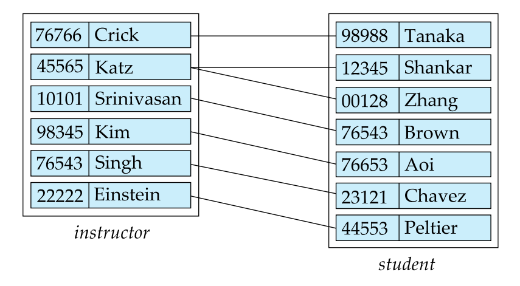
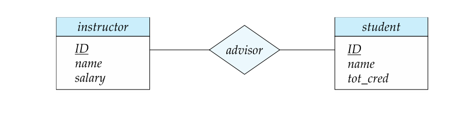
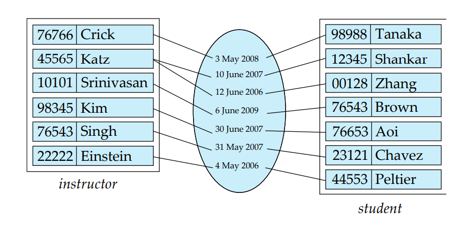
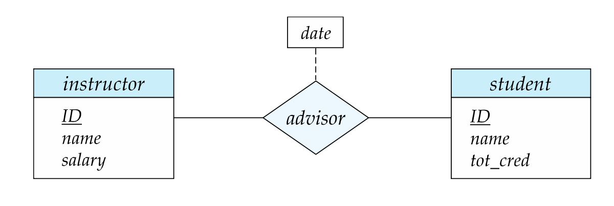
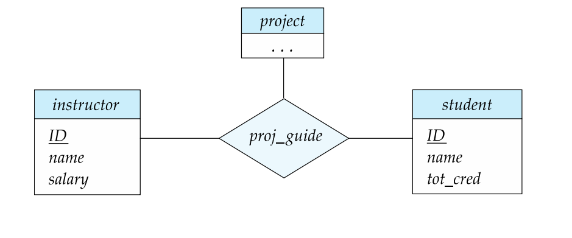
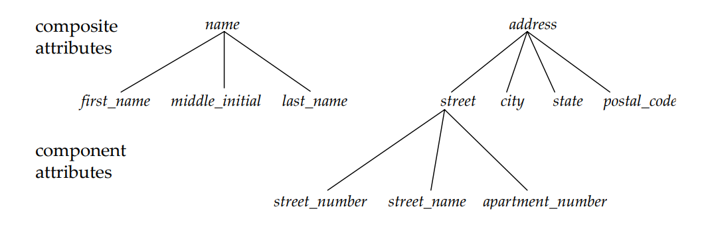

Chapter 3: The Entity-Relationship Model
Lecturer: Jane YOU, Compiler: Zhen, TONG
Before everything, The first lab is released, please follow the docs and implement it, which will do you good in your final project😗
Design DB in 3 Phases
First, let's have a high-level overview of the typical stages involved in designing a database. Let's break down 3 phases:
1. Initial Phase - Characterizing Data Needs:
In this phase, you start by understanding the data requirements of the prospective database users. This involves gathering detailed information about what kind of data the users need, how they will use it, and what specific data elements are important to them.
You may conduct interviews, surveys, or analyze existing processes and documents to collect this information.
2. Second Phase - Choosing a Data Model:
In this phase, you decide on the data model that best suits the requirements gathered in the initial phase. Common data models include relational, hierarchical, network, or object-oriented models (we have talked about it in the first lecture).
You apply the chosen data model's concepts to translate the data requirements into a conceptual schema. This schema represents the high-level structure of the database without specifying implementation details.
The conceptual schema helps identify the functional requirements of the enterprise, including the kinds of operations or transactions that will be performed on the data. This phase is crucial for understanding how data will be used.
3. Final Phase - Moving to Implementation:
This phase involves transitioning from the abstract data model to the actual implementation of the database, which is the most exciting part! 😋 It includes two sub-phases:
a. Logical Design: - In the logical design phase, you decide on the database schema, which is the blueprint for the database structure. This includes defining tables, relationships between tables, primary keys, foreign keys, and attributes. - Business decisions are made to determine what specific attributes (data fields) should be recorded in the database to meet the users' needs. - Computer science decisions involve defining the relation schemas (tables) and how attributes should be organized within these schemas to ensure data integrity and efficiency.
b. Physical Design: - The physical design phase focuses on the actual storage and access mechanisms for the database. It involves decisions such as how data will be stored on disk, indexing strategies, partitioning, and optimization for performance. - This phase is where you consider factors like hardware capabilities, database management system (DBMS) selection, and tuning for efficient data retrieval and storage.
Caution❗
When designing a database schema, it's crucial to avoid redundancy and incompleteness while also considering that there can be multiple good design alternatives. Let's explore these concepts further:
1. Redundancy:
Redundancy occurs when the same data is stored in multiple places within the database. This can lead to several problems, including:
Data Inconsistency: If redundant data is updated in one place but not in another, it can result in inconsistencies and errors.
Increased Storage Costs: Storing the same data multiple times consumes more storage space.
Maintenance Challenges: Redundant data requires more effort to update and maintain.
To avoid redundancy, normalization techniques are often used in relational database design. These techniques help eliminate or minimize redundancy by organizing data into separate tables and establishing relationships between them.
However, redundancy sometimes can be a good thing, we'll see later😆
2. Incompleteness:
Incompleteness occurs when a database schema does not adequately represent all the aspects of the enterprise it is designed to model. This can lead to difficulties or limitations in using the database to support business processes.
To address incompleteness, it's important to thoroughly analyze the data requirements during the initial phase of database design.
Good Design Approach😜
The Entity-Relationship (ER) model and normalization theory are two fundamental design approaches in database design. Let's explore each of these approaches in more detail:
1. Entity-Relationship Model:
Definition: The Entity-Relationship (ER) model is a conceptual data model that represents an enterprise or system as a collection of entities and the relationships between them.
Key Concepts:
Entity: An entity is a distinct "thing" or "object" in the enterprise that can be uniquely distinguished from other objects. Each entity is described by a set of attributes that define its properties or characteristics.
Relationship: A relationship represents an association or connection among several entities. It defines how entities are related to each other and can be one-to-one, one-to-many, or many-to-many.😎 We will take care of them later!
Entity-Relationship Diagram (ERD): ER modeling is often represented diagrammatically using ERDs. These diagrams visually depict entities as rectangles, attributes as ovals or ellipses connected to entities, and relationships as lines connecting entities.
2. Normalization Theory:
Definition: Normalization is a formal process in database design that aims to minimize data redundancy and improve data integrity by organizing data into tables (relations) in a way that reduces or eliminates data anomalies.
Key Concepts:
Functional Dependencies: Normalization theory is based on the concept of functional dependencies, which defines relationships between attributes in a table.
Normal Forms: There are several normal forms (1NF, 2NF, 3NF, BCNF, etc.), each with specific rules for organizing data to achieve progressively higher levels of normalization. These rules help identify and eliminate data redundancy.
Benefits: Normalization helps ensure that data is stored efficiently and avoids update anomalies such as insertion, deletion, and modification anomalies. It improves data integrity by reducing the risk of inconsistent data.
ER Model
Here are the key concepts and components of the ER model:
Entity Set:
An entity set is a collection or set of entities of the same type that share the same properties or characteristics. In other words, an entity set groups together entities that have common attributes and represent the same type of real-world object.
Attributes:
We have talked about it in the last note.
Primary Key:
We have also talked about it in the last note. Using underline to indicate it
Relationship Set:
A relationship set is a mathematical relation among n (where n ≥ 2) entities, with each entity taken from specific entity sets. It defines a collection of related instances, each comprising entities from their respective sets.
The notation for a relationship set is typically written as
In example, the relationship set "advisor" represents the associations between students and the instructors who serve as their advisors. 
Relationship Sets with Attributes
An attribute can also be associated with a relationship set, sometimes called descriptive attribute
For instance, the advisor relationship set between entity sets instructor and student may have the attribute date which tracks when the student started being associated with the advisor 
Degree of a Relationship Set
The degree of a relationship set refers to the number of entity sets participating in a relationship. In other words, it indicates how many entity sets are connected by a single relationship set, which is the same definition in graph theory.
Binary Relationship:
A binary relationship is a relationship set that connects exactly two entity sets. It's the most common type of relationship encountered in database modeling.
Higher-Degree Relationships (Ternary and Beyond):
Relationships that involve more than two entity sets are less common but do exist. A ternary relationship is one that connects three entity sets, making it a "degree-three" relationship.
Higher-degree relationships, such as ternary (degree-three) or quaternary (degree-four) relationships, are used when modeling more complex scenarios that require relationships among multiple entities simultaneously.
An example you provided is the "proj_guide" relationship, which is a ternary relationship connecting the "instructor," "student," and "project" entity sets. It represents the association between an instructor guiding a student in a research project. 
Complex Attributes 🙄
Let's expand on each kind of attributes one by one :
1. Simple Attributes:
A simple attribute is an attribute that cannot be divided any further into meaningful components. It represents an atomic value that describes a specific property or characteristic of an entity.
Examples of simple attributes include "Name," "Age," and "Address." These attributes have single values and don't need further decomposition.
2. Composite Attributes:
A composite attribute is an attribute that can be divided into subparts, each with its own meaning. These subparts represent more granular properties of the entity.
For example, an "Address" attribute can be composed of subparts such as "Street," "City," "State," and "Zip Code." Each subpart contributes to the overall "Address" attribute. 
3. Single-Valued Attributes:
A single-valued attribute is an attribute that holds a single value for each entity. It is straightforward and has no multiple values or components.
An example of a single-valued attribute "Social Security Number," where each entity has a single, unique value for the attribute.
4. Multivalued Attributes:
A multivalued attribute is an attribute that can hold multiple values for an entity. It represents a property that can have multiple components, each with a distinct meaning.
An example is the "phone_numbers" attribute, where an entity (e.g., a person) may have multiple phone numbers (e.g., home, work, mobile) associated with it.
5. Derived Attributes:
A derived attribute is an attribute whose value can be computed or derived from other attributes in the database. It doesn't require direct input but is instead calculated based on existing data.
For example, "Age" can be a derived attribute computed from the "Date of Birth" attribute. The database system can automatically calculate the age of a person based on their birthdate.
6. Domain:
The domain of an attribute defines the set of permissible values that the attribute can take. It specifies the data type, format, and constraints for the attribute.
For instance, the domain of an attribute might specify that it can only contain integer values between 1 and 100, or it might define a specific format for dates (e.g., YYYY-MM-DD).
Now can you tell the difference of ❓
Simple and composite attributes
Single-valued and multivalued attributes
Mapping💘
Types of Mapping Cardinality Constraints for Binary Relationships:
One-to-One (1:1) Relationship:
In a one-to-one relationship, each entity in one entity set is associated with exactly one entity in the other entity set, and vice versa.
Representation: Use a directed line (→) connecting the relationship set to both entity sets.
One-to-Many (1:N) Relationship:
In a one-to-many relationship, each entity in one entity set can be associated with multiple entities in the other entity set, but each entity in the other entity set is associated with at most one entity in the first entity set.
Representation: Use a directed line (→) from the one side (with the "one" end) and an undirected line (—) from the many side (with the "many" end) connecting the relationship set to the entity sets.
Many-to-One (N:1) Relationship:
In a many-to-one relationship, each entity in one entity set is associated with at most one entity in the other entity set, but each entity in the first entity set can be associated with multiple entities in the other entity set.
Representation: Use a directed line (→) from the many side (with the "many" end) and an undirected line (—) from the one side (with the "one" end) connecting the relationship set to the entity sets.
Many-to-Many (N:N) Relationship:
In a many-to-many relationship, each entity in one entity set can be associated with multiple entities in the other entity set, and vice versa.
Representation: Use undirected lines (—) connecting the relationship set to both entity sets.
Primary Key for Relationship Sets:
To distinguish between different instances of a relationship within a relationship set, you use the primary keys of the entities involved in the relationship set.
If a relationship set "R" involves entity sets "E1," "E2," ..., "En," then the primary key for "R" is the union of the primary keys of "E1," "E2," ..., "En."
For example, in the "advisor" relationship set, which involves the "instructor" and "student" entity sets, the primary key for "advisor" consists of the union of the primary keys "instructor.ID" and "student.ID."
Choice of Primary Key for Binary Relationship Sets:
The choice of the primary key for a binary relationship set depends on the cardinality of the relationship:
Many-to-Many Relationships: In many-to-many relationships, the union of the primary keys of the participating entities forms a minimal superkey and is chosen as the primary key for the relationship set.
One-to-Many Relationships: In one-to-many relationships, the primary key of the "Many" side (i.e., the side with multiple entities) is typically a minimal superkey and is used as the primary key for the relationship set.
Many-to-One Relationships: Similar to one-to-many relationships, in many-to-one relationships, the primary key of the "Many" side is typically a minimal superkey and serves as the primary key for the relationship set.
One-to-One Relationships: In one-to-one relationships, the primary key of either one of the participating entity sets forms a minimal superkey, and you can choose either entity's primary key as the primary key for the relationship set.
Weak Entity🤔
Weak entity sets are essential for modeling entities whose existence depends on the existence of another entity, called the identifying entity.
Instead of having its own primary key, a weak entity set uses the attributes of the identifying entity set along with additional discriminator attributes to uniquely identify its entities.
Identifying Entity Set:
The identifying entity set is the one on which the weak entity set depends for identification.
The identifying entity set "owns" the weak entity set that it identifies, and the relationship connecting them is called the "identifying relationship."
Discriminator Attributes:
Discriminator attributes are extra attributes added to the weak entity set to help distinguish entities within the weak entity set that have the same values in the attributes inherited from the identifying entity set.
These discriminator attributes are typically used to ensure uniqueness within the weak entity set.
Representation in E-R Diagrams:
In E-R diagrams, a weak entity set is typically depicted using a double rectangle.
The discriminator attributes are underlined with a dashed line to indicate their role in identifying the weak entity set.
The relationship set connecting the weak entity set to the identifying strong entity set is represented by a double diamond.
Total Participation:
Typically, a weak entity must have total participation (or existence dependency) in its identifying relationship set. This means that every entity in the weak entity set must be associated with an entity in the identifying entity set.
Primary Key for Weak Entity Sets:
The primary key for a weak entity set is composed of the attributes from the identifying entity set along with the discriminator attributes specific to the weak entity set.
This combination of attributes ensures the uniqueness of each entity within the weak entity set.
Redundant Attributes😏
According to the ER Diagram, sometimes an attribute can be redundant like:
The dept_name in instructor entity is redundant, because the attribute has already been represented in the relationship.
Reduction to Relation Schemas🏆
Now it's time for us to sum everything we learn together!🥇
Strong Entity Set: A strong entity set is represented as a schema with attributes corresponding to the entity's attributes, including the primary key.
Example: The "student" entity set is represented as the "student" schema with attributes (ID, name, tot_cred).
Weak Entity Set: A weak entity set is represented as a schema that includes a column for the primary key of the identifying strong entity set. This schema also includes attributes specific to the weak entity set.
Example: The "section" weak entity set is represented as the "section" schema with attributes (course_id, sec_id, semester, year).
Take care of attributes
Pay attention to everything we discussed about attributes
Representation of Relationship Sets:
Find out the mapping truth.
Combination of Schemas:
Combine all the ERs together in a diagram
Schemas for weak entity sets can be combined with schemas for the identifying strong entity sets.